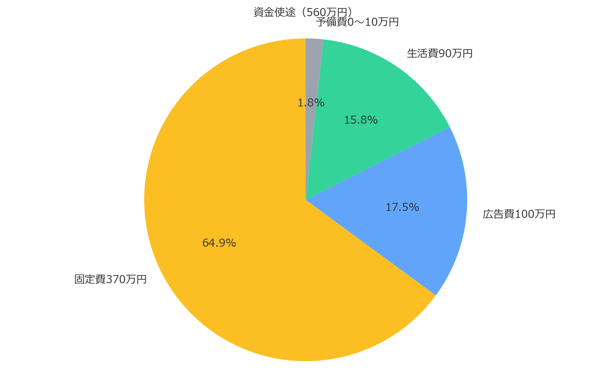
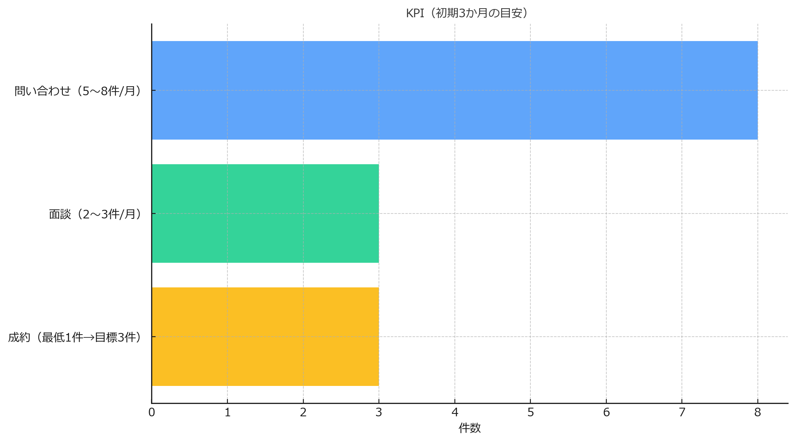

600/480（調達600→手取り480）では生活費・広告費が不足し、初月から赤字転落のリスク。
700/560（調達700→手取り560）を必達ラインとして、最低3か月を走り切る資金設計です。
| 項目 | 金額 |
|---|---|
| 事務所 | 70 |
| 会社設立 | 30 |
| 免許 | 130 |
| 什器備品 | 60 |
| HP制作 | 50 |
| 税理士 | 10 |
| 複合機 | 20 |
| 固定費小計 | 370 |
| 広告費 | 100 |
| 生活費（3か月） | 90 |
| 予備費 | （数十） |
※生活費は最低限（倒産回避の生命線）。借入は非常時のバックアップであり前提にしません。
※幅は 560 を100%としたイメージ比率です。
→ 600/480では広告・生活費が不足。
→ 700/560なら最低3か月の猶予を確保し、初月からの案件獲得に集中できます。
今回のクラウドファンディングでは 700万円の調達を目指します。CAMPFIREの手数料等を差し引いた「手取り560万円」を以下のように使います。
合計：560万円
広告は CPA 2万円以内 を上限に運用し、次の数値を目安とします。
まずは「最低1件の成約を必ず確保すること」を現実的なラインとし、運用が軌道に乗れば月3件ペースを目標に成長を図ります。
本部は「営業しない」体制を貫き、集客は本部、接客は宅建士が担当。問い合わせ数・広告費・CPA・成約数は 週次で公開 し、進捗を共有します。
今回のクラウドファンディングでご支援いただいた資金の使い道は以下の通りです。
本プロジェクトの進捗を管理するため、以下のKPIを設定しています。
ご支援金の使い道と、初期3か月の目標（KPI）を並べてご覧いただけます。
600/480（調達600→手取り480）では広告費・生活費が不足。
700/560（調達700→手取り560）を「必達ライン」として、最低3か月を走り切る計画です。
| 項目 | 金額 |
|---|---|
| 事務所 | 70 |
| 会社設立 | 30 |
| 免許 | 130 |
| 什器・備品 | 60 |
| HP制作 | 50 |
| 税理士 | 10 |
| 複合機 | 20 |
| 固定費 小計 | 370 |
| 広告費（初動3か月） | 100 |
| 生活費（3か月・最低限） | 90 |
| 予備費（5〜6%目安） | 0 |
| 合計 | 560 |
※ 現状は合計560に合わせるため予備費は0。予備費を計上する場合は広告費を調整（例：広告費90・予備費10 など）。
600/480では広告・生活費が不足し初月から赤字リスク。
700/560なら最低3か月の猶予を確保し、案件獲得に集中できます。
一般の方の恩恵：売買は1億円物件で通常約336万円が0円。賃貸も仲介手数料0円。
「営業しない不動産会社」。私は社員に営業をさせません。但し、宅建士登録100名の場合
売買も賃貸も仲介手数料は最大無料。集客は本部中心、接客は宅建士。宅建士自身の集客方法も指導。これを地上波CMで“選択肢”にします。